About
This project aims to provide a comprehensive visual analysis of earthquakes and tsunamis in Japan over the past 100 years. The data covers the period from 1925 to 2024. Notably, there were no recorded earthquakes or tsunamis in 1925, marking the starting point of the analysis. The visualizations will highlight the frequency, magnitude, and impacts of these natural disasters, providing valuable insights into their patterns and effects over the last century.
The data for this project was sourced from the NOAA Hazards database, a credible and authoritative source for environmental information. To ensure accuracy, the data underwent thorough validation checks, including verifying the consistency of recorded magnitudes and dates. Additionally, any missing or incorrect data points were addressed through rigorous preprocessing.
Here you can find a link to my GitHub repository: GitHub - Documentation
Research
As part of my research, I spent several days searching for the necessary data resources. Initially, most websites did not have the specific data I was looking for. I discovered some data on the Kaggle website, but it lacked the necessary links or files for direct access. Persisting in my search, I eventually found the required datasets on the NOAA (National Centers for Environmental Information) website.
For the earthquakes dataset, I used the NOAA Hazards database, setting the parameters to cover the years from 1924 to 2024 and the magnitude range from 0.0 to 9.0. Similarly, I obtained the tsunamis dataset from the same source, applying the same year range. After setting these parameters, I downloaded the data in TSV format, which I then exported to Excel for data verification and preprocessing. I removed unnecessary data fields to streamline the datasets and subsequently converted them to CSV format for analysis.
During the data cleaning process, special attention was paid to removing any inaccuracies such as duplicate records, typos, and inconsistencies in data formatting. Missing values were handled by interpolation or exclusion, depending on the context and extent of missing data. The ethical use of data was a priority throughout this project, ensuring that all data was sourced and used in compliance with relevant guidelines and privacy considerations.
Earthquakes Dataset: NOAA Earthquakes Data
Tsunamis Dataset: NOAA Tsunamis Data
These datasets provided the comprehensive information needed for my visual analysis to examine the frequency, magnitude, and impacts of earthquakes and tsunamis in Japan over the past 100 years.
The target audience for this visualization includes researchers, policymakers, and the general public. Geologists and seismologists can utilize these visualizations to gain deeper insights into the patterns and impacts of earthquakes and tsunamis in Japan. Policymakers and disaster management agencies can use the data to inform decisions related to disaster preparedness, urban planning, and infrastructure development. Additionally, the general public, including educational institutions, can benefit from increased awareness and understanding of these natural disasters, fostering better preparedness and resilience within communities.
The visualizations aim to provide key insights into the frequency, magnitude, and impacts of earthquakes and tsunamis in Japan over the past 100 years. By examining the frequency of events, the visualizations will reveal trends and periods of increased activity, aiding in the identification of potential patterns. The distribution of magnitudes will highlight the most common and severe events, helping to prepare for future occurrences. Impact analysis will illustrate the extent of damage, economic costs, and human casualties, providing a comprehensive understanding of the long-term effects of these disasters. Lastly, the geographic distribution of events will identify the most affected areas, informing targeted preparedness and resource allocation efforts.
Design
Early planning and brainstorming ideas
The design process for this project began with initial planning and brainstorming to determine the most effective ways to visualize the data on earthquakes and tsunamis in Japan over the last 100 years. Early sketches, as shown in the provided image, explored various chart types and maps to represent the data effectively.
One of my initial ideas was to create a visualization based on the magnitude of events to show their impact on Japan. To achieve this, I decided to develop two visualizations: a time series plot to display changes in magnitude over the years, and a geospatial bubble plot to provide detailed, location-based information on a map. This approach aimed to make the data more comprehensible and visually engaging. Over time, I extended this methodology to include tsunami data as well.
Next, I focused on illustrating the impact of earthquakes and tsunamis on Japan using a radar chart. This visualization effectively highlighted various impact metrics, such as injuries, deaths, missing, damage, house destroyed and house damage.
To convey the total damage caused by these natural disasters, I employed a side-by-side bar chart, allowing for a clear comparison between the effects of earthquakes and tsunamis.
Recognizing the importance of visualizing tsunami water heights, I decided to focus on significant events where the water height was 5.0 meters or higher. Initially, I considered using a ridgeline plot, but it did not provide a clear understanding of the water height or its timing. Consequently, I opted for a bar chart, which clearly illustrated the water height for each year when a tsunami occurred.
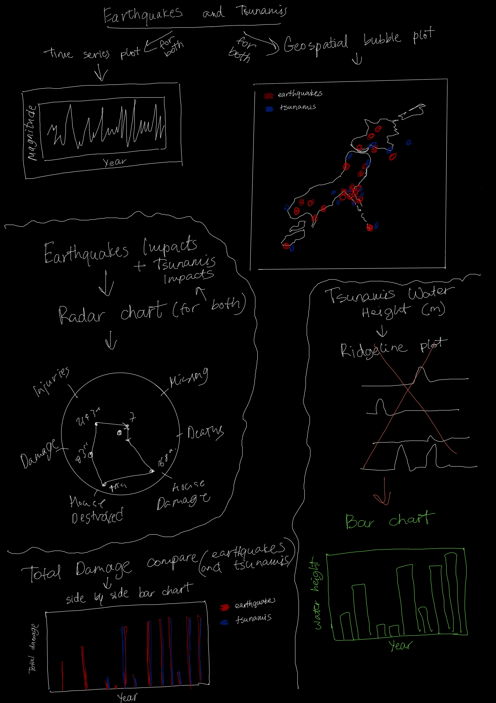Towards the end of the project, I aimed to create a visualization that showed the combined impact of earthquakes and tsunamis in Japan over the last 100 years. My first attempt involved a geospatial heatmap, but it proved ineffective due to issues with color representation. The heatmap either displayed as white or the colors obscured the entire map of Japan. Therefore, I decided to create another geospatial bubble plot, this time incorporating both datasets. Additionally, I adjusted the map's style to enhance accessibility for color-blind users, ensuring the visualization was both informative and accessible.
In line with principles of effective data visualization, efforts were made to maximize the data-to-ink ratio, ensuring that the visualizations were clear and not cluttered with unnecessary elements. Accessibility considerations, such as color-blind-friendly palettes, were incorporated to make the visualizations more inclusive.
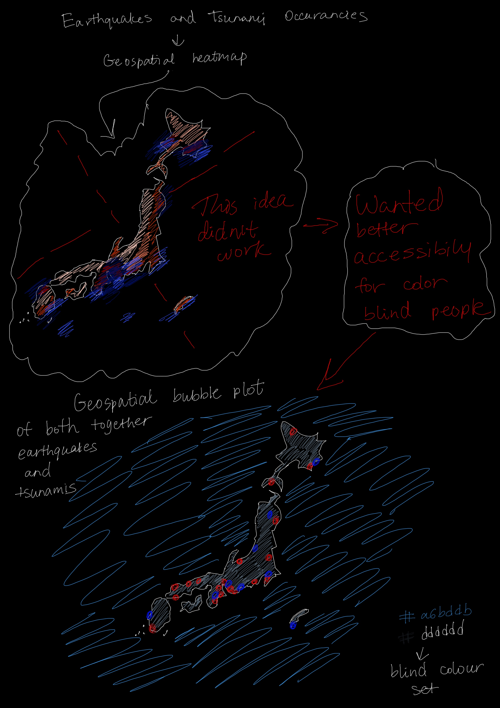Development
I decided to initially focus on creating the visualizations and generating the graphs, closely following my design sketch plan. This step was crucial for setting a solid foundation for the project, allowing me to understand the data better and identify the most effective ways to communicate the insights.
1. Time series plot for earthquakes
Using pandas for data manipulation and matplotlib for plotting, I loaded and cleaned earthquake data from a CSV file. The plot showed magnitudes over time, with years on the x-axis and magnitudes on the y-axis. I added customizations like gridlines, titles, and colorblind-friendly palettes for clarity and accessibility.
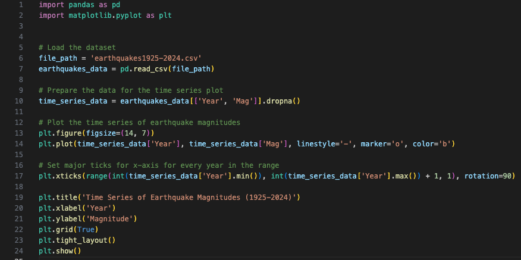2. Geospatial bubble plot for earthquakes
I created a geospatial bubble plot of earthquake magnitudes using the pandas library for data manipulation and matplotlib for plotting. The code loaded earthquake data from a CSV file, cleaned and processed it, and then plotted the latitude and longitude of each earthquake event as bubbles on a map. The size of each bubble represented the magnitude of the earthquake. Additional features such as titles and labels were added to enhance the plot's readability and provide context.
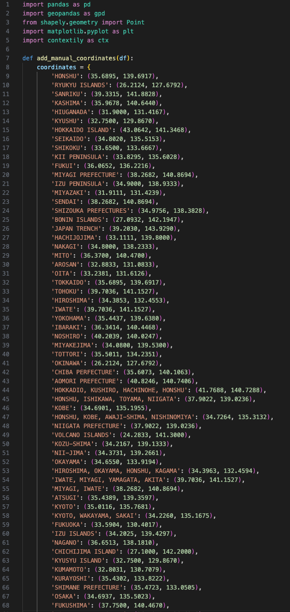 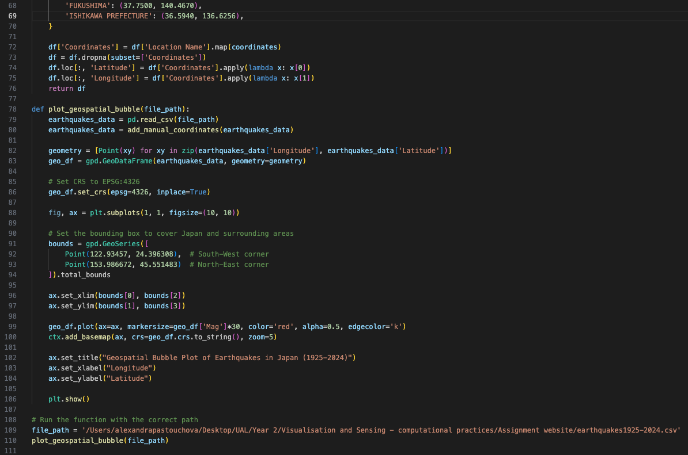Initially, the visualization lacked detail and clarity, as shown in the first image. The basic map was not sufficient to understand the geographical context of the earthquake locations. To address this, I integrated an OpenStreetMap (OSM) layer using the contextily library, which provided a detailed background map. However, it was challenging to ensure that the map covered all of Japan adequately. The second image shows that I had issues with setting up a map that would cover all of Japan, highlighting the difficulty in displaying all necessary location names and details correctly. This integration was essential for improving the visualization's clarity and making the earthquake data more understandable.
3. Time series plot and geospatial bubble plot for tsunamis
To create the time series plot and geospatial bubble plot for tsunamis, I followed the same steps as I did for the earthquake visualizations. I used the same coding structure and techniques, simply substituting the earthquake dataset with the tsunami dataset and updating the location names accordingly.
4. Earthquakes Impacts and Tsunamis Impacts
To create the radar chart visualizing the impacts of earthquakes, I began by importing the necessary libraries, such as pandas for data manipulation and matplotlib for plotting. The code loaded the earthquake impact data from a CSV file, which included metrics like injuries, deaths, and property damage. I processed the data to fit the structure required for a radar chart. Using matplotlib, I plotted each impact metric on the radar chart, ensuring that each axis represented a different metric. I customized the chart by changing the colors of the numbers and text to improve visibility and readability, making the data more accessible and easier to interpret.
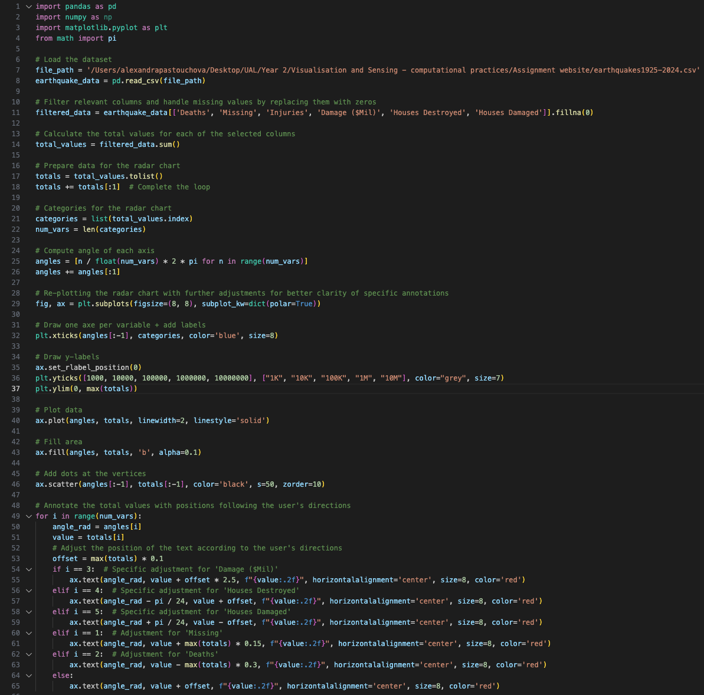 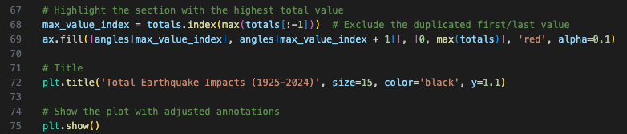5. Total damage for both earthquakes and tsunamis to compare
To create the side-by-side bar chart for visualizing the total damage caused by earthquakes and tsunamis, I used the pandas and matplotlib libraries. The code began by loading the earthquake data from a CSV file, and then I filtered the necessary columns using filtered_data = earthquake_data[['Deaths', 'Missing', 'Injuries', 'Damage ($Mil)', 'Houses Destroyed', 'Houses Damaged']].fillna(0) to handle any missing values. This prepared the data for plotting. I used matplotlib to create the bar charts, plotting each category of damage side-by-side for comparison. I customized the chart by changing the colors of the numbers and text to enhance visibility and readability.
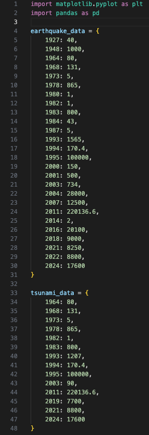 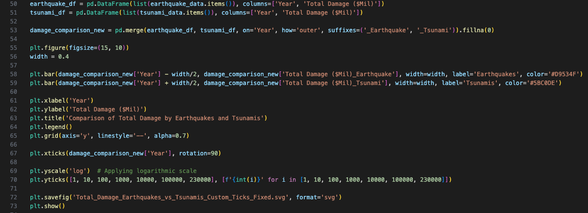For the tsunami impact, I followed the same process as for the earthquake data, making adjustments to the numbers to reflect the different impact metrics.
6. Tsunamis Water Height (m)
To create a bar chart visualizing tsunami water heights, I used the pandas library for data manipulation and matplotlib for plotting. The code began by loading tsunami data from a CSV file, filtering for events with a water height of 5.0 meters or higher. The data was then grouped by year, and the maximum water height for each year was calculated. I plotted this data using a bar chart, with the x-axis representing the years and the y-axis representing the maximum water heights. To improve visibility, I adjusted the colors for the numbers and text.
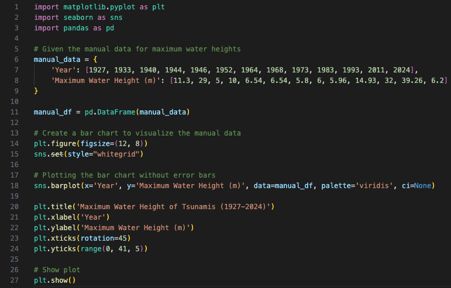Initially, I planned to use a ridgeline plot to visualize the tsunami water heights, but this approach did not provide a clear understanding of the water heights or their timing. As shown in the first two images, the ridgeline plot made it difficult to interpret the data accurately due to overlapping lines and insufficient distinction between years.
When I switched to a bar chart, I encountered an issue where unwanted lines appeared on top of the bars, as circled in the third image. These lines made the chart cluttered and less readable. To resolve this, I needed to adjust the code to remove these extraneous lines, resulting in a clearer and more effective visualization of the tsunami water heights over time.

7. Earthquakes and Tsunamis Occurancies
To create a geospatial bubble plot of earthquakes and tsunamis, I used pandas for data manipulation and matplotlib for plotting. The code began by loading datasets for both earthquakes and tsunamis from CSV files. I processed the data to extract relevant information, such as latitude, longitude, and magnitude. Using matplotlib, I plotted each event on a map, with bubbles representing earthquakes and tsunamis. The size of the bubbles was proportional to the magnitude of the events. Titles, labels, and legends were added to provide context and improve readability.
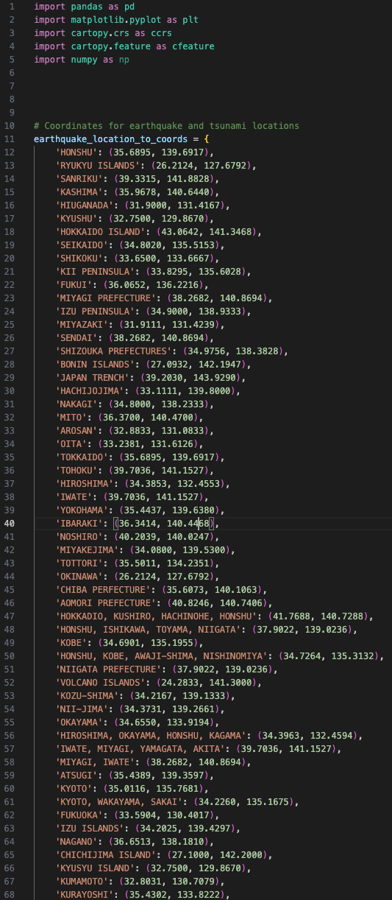 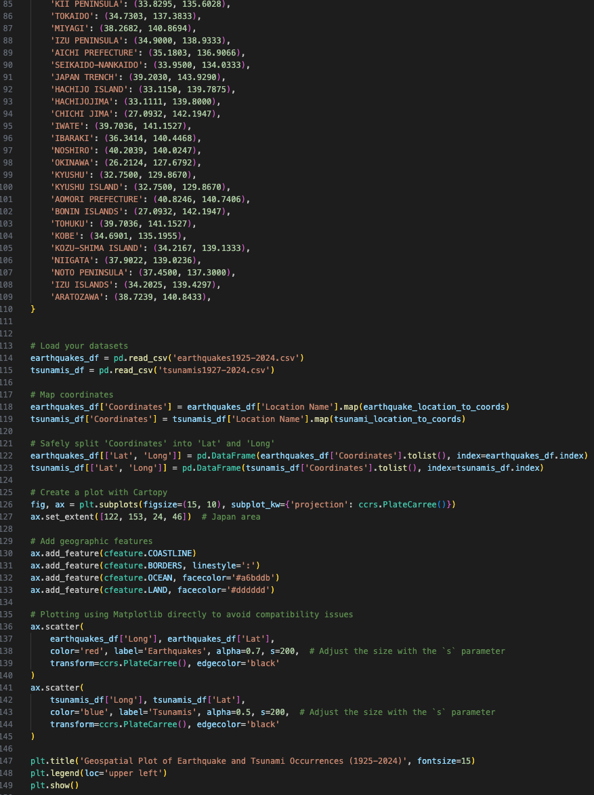Initially, I attempted to create a heatmap to visualize the occurrences of earthquakes and tsunamis. However, I encountered several issues with color adjustments. The colors either did not display correctly or resulted in a white map with no visible data points, as shown in the first two images. These issues made it difficult to create a clear and informative heatmap.
To resolve these problems, I decided to retain the map and color settings from the last image but switched from a heatmap to a bubble plot. This change ensured that the data points were clearly visible and accurately represented the magnitude of each event. The final visualization effectively combined the geographical distribution of earthquakes and tsunamis with an accessible and understandable format.
8. Japan's Earthquake history throught timeline map
To make the interactive map functional, I started with troubleshooting issues related to its interactivity. Initially, the map displayed static data without the desired interactivity. The first step involved ensuring that the JavaScript and CSS files were correctly linked and loaded. After confirming the HTML structure was accurate and D3.js was properly implemented for loading and parsing earthquake data, I shifted my focus to debugging the JavaScript. Console logs indicated that while data was being parsed, it was not rendered correctly on the map. By inspecting console logs and output, I identified issues with SVG element generation and ensured that coordinates and data bindings were properly set up using D3.js.
Next, I enhanced the map's interactivity by adding functionality for users to select a year and display relevant earthquake data. I chose a dropdown menu for its simplicity and effectiveness. I added the dropdown, populated it with unique years from the data, and linked it to update the map based on the user's selection. Additionally, I needed to find the longitude and latitude of Japan's cities and prefectures and manually add this information to my data file. To improve user experience, I made styling adjustments to increase the size and visibility of the dropdown menu. Using CSS Flexbox, I modified the page layout to center the dropdown and map elements vertically and horizontally. Finally, I added a title to the page, styled it, and positioned it at the top for visibility. Throughout the process, I tested each change to ensure compatibility and performance, resulting in a fully functional and user-friendly interactive map capable of dynamically displaying earthquake data across different years.

Final visualizations
This section presents 9 detailed visualizations that analyze the frequency, magnitude, and impacts of earthquakes and tsunamis in Japan from 1925 to 2024. Each visualization provides unique insights into the patterns and effects of these natural disasters, helping to understand their historical trends and geographic distribution.
Check a website to see them: 9 Final visualizations
Here you can find a link to my GitHub repository: GitHub - 9 Final visualizations
In addition to the static visualizations, I created an interactive map that allows viewers to explore Japan's earthquake history dynamically. This visualization features a selectable timeline, enabling viewers to see earthquake occurrences by year. The interactive map provides a detailed and engaging way to explore the geographic distribution and magnitude of earthquakes over time, enhancing user understanding through interactive exploration.
Explore Japan's Earthquake history: Timeline map
Here you can find a link to my GitHub repository: GitHub - Timeline map
The visualizations collectively provide key insights into the frequency, magnitude, and impacts of earthquakes and tsunamis in Japan over the past century. These insights are crucial for disaster preparedness, policy-making, and future research, offering a comprehensive understanding of the long-term effects of these natural disasters.
References
Burns, S. (2019). Python data visualization : an easy introduction to data visualization in Python with Matplotlip, Pandas, and Seaborn : step-by-step tutorial for beginners. S.L.: Amazon Kdp Printing And Publishing.
Cartwright, J.H.E. and Nakamura, H. (2008). Tsunami: a history of the term and of scientific understanding of the phenomenon in Japanese and Western culture. Notes and Records of the Royal Society, 62(2), pp.151-166.
Federica Ranghieri, Mikio Ishiwatari and World Bank (2014). Learning from megadisasters : lessons from the Great East Japan Earthquake. Washington, Dc: World Bank.
Gupta, H.K. and Gahalaut, V.K. (2013). Three Great Tsunamis: Lisbon (1755), Sumatra-Andaman (2004) and Japan (2011). Dordrecht Springer Netherlands.
Hunter, J. (2014). 'Extreme Confusion and Disorder'? The Japanese Economy in the Great Kantō Earthquake of 1923. The Association for Asian Studies.
Ishibashi, K. (2009). Status of historical seismology in Japan. Annals of Geophysics, 47(2-3). doi:https://doi.org/10.4401/ag-3305.
Iwata, K., Ito, Y. and Managi, S. (2013). Public and private mitigation for natural disasters in Japan. [online] Available at: https://www.sciencedirect.com/science/article/abs/pii/S2212420913000678.
Matsu'ura, R.S. (2017). A short history of Japanese historical seismology: past and the present. Geoscience Letters
Palm, R. (2019). Illusions Of Safety. Routledge
Smits, G. (2014). When the Earth Roars. Rowman & Littlefield.
The Great East-Japan Earthquake and Devastating Tsunami: An Update and Lessons from the Past Great Earthquakes in Japan since 1923. (2013). The Tohoku Journal of Experimental Medicine. [online] Available at: https://www.jstage.jst.go.jp/article/tjem/229/4/229_287/_article/-char/ja/.
Zhu, N. (2017). Data visualization with D3 4.x cookbook : discover over 65 recipes to help you create breathtaking data visualizations using the latest features of D3. Birmingham, England: Packt Publishing.